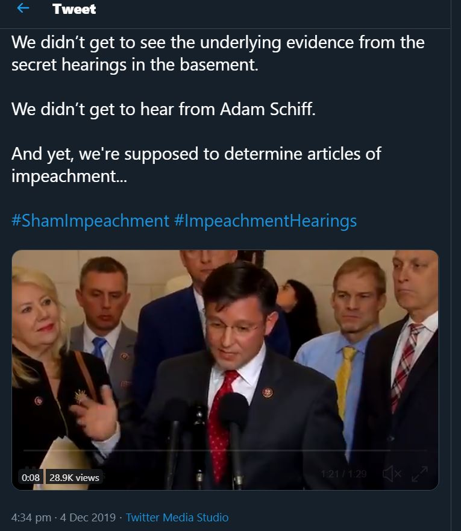

Results
Browsing
Any user who uses Twitter knows that they must start their browsing experience on the Twitter homepage, which provides a platform for them to post content, and catch up on the most current news and posts relevant to them. The homepage is also a place for companies to put advertisements on Twitter, which is an important aspect of Twitter’s business and an important part of the user experience for generic Twitter users.
The homepage of Twitter contains all of the posts from the accounts that the user has followed, or that their followers have retweeted or liked. The design of the homepage is cleaner and more user friendly than Facebook's due to more "space" in layout, larger words for the sidebars and headings, and a cleaner looking design. These features allows for the user to easily find and see relevant content that they might be more willing to interact with, instead of generic posts or articles that have nothing to do with them at all. By focusing the design on relevant information, the user is more willing to spend more time browsing the site for information that may pertain to their interests. On the left hand side are the sidebars that hold the different tabs that lead to specific posts and information that the user could be interested in, or Twitter's direct messaging system.

If the user looks to the sidebar, they can see a tab with the word explore on it. The icon of the Explore tab is the hashtag (#), which is an iconic feature on Twitter used to link relevant articles and posts together. By clicking into the explore menu, Twitter allows users to choose from specific categories about what information the user is willing to see, and what information the Twitter algorithm thinks that the user would be more interested in clicking. In the image above, I clicked on the News that was trending in the United States, and most of the news on the website are very recent - within a day or two. The variety of news is also important. Tech related news like the Microsoft global outage are prevalent, but also political statements and news such as the US Senate passing the bills on the Hong Kong Protestors. Unlike news articles and news channels, everything on Twitter is up to date and is in sync with what is happening at the very moment. A simple page refresh can bring about the newest updates that would have had to go through much editing and modifications before they reach TV channels and Newspapers. Most of the categories in Explore also come with images, which makes catching the user's attention much easier. With category titles of a few words and no descriptions, everything about the design in the Explore feature screams speed. By using words that capture the readers attention and immediately linking them to relevant articles, Twitter can better navigate the user to find relevant articles and post them.

To modify search choices, Twitter provides a filter option, which allows users to alter their search results and hide out posts or comments they do not want to see. In this way, Twitter at least gives some control over its information to the users so that they may decide what to see, which from my experience was better than that of Facebook's search filter.
Reacting
In comparison with Facebook, Twitter provides much less functions for reacting to specific posts or replies, which significantly limits this part of its applications. Sano-Franchini describes that Facebook allows “six emotions reactions: Like, Love, Haha, Wow, Sad, and Angry, as represented by six animated emoji” (19) compared to Twitter’s single “heart” option. With an abundance of emoji reactions, users on Facebook can more likely select the option that matches their emotional viewpoint on the post, while the same action on Twitter is severely limited by the dearth of options.

Shown above are the options for reacting to posts on Twitter. The left icon is representative of a reply, the middle icon is the retweet icon, and the right icon is the icon for liking the post. As mentioned before, due to the fact that Twitter's reaction options are very limited, it can be very hard to truly express the correct user sentiment. The heart option only shows positivity towards a post; however sometimes there is a need for different emotional responses, such as anger or sadness. For example, a news story about an migrant child dying on the way to a better life could best be described as sadness or anger, not "happiness" as represented by the heart icon. That is why many Twitter users who cannot express their real sentiments on Twitter take to the comment section to vent out their emotional frustration.
Commenting
Commenting on Twitter posts is similar to that of Facebook in that users can directly interact with the post and its replies by clicking in the text box that is provided and writing down whatever they are thinking. However, unlike Facebook, Twitter has limitations to the size of the comment; in the past, the limit of the number of characters on a single tweet is 140 characters. Twitter has changed it so that the maximum number of characters now is at 280 characters, which may seem like a lot, but is actually restraining when it comes to users trying to express their complete emotions. Thus, a lot of users resort to quick “soundbites” and utilize images and gifs to express their immediate reaction to a post.
Posting
Posting on Twitter is similar to that of Facebook, with a variety of options available to the user. At the top of the front page is a text box in which one can write their “tweet” and post it. The tweet can be embedded with text, images, polls, and gifs as seen below. The different buttons allows users to express their ideas and their opinions in various forms.

The post interface itself is a pretty simple interface; there is a massive textbox encouraging the user to post their immediate thoughts or opinions along with various little icons on the bottom.
For thoughts and ideas that cannot be directly addressed by words, Twitter provides both a gif and an emoji icon, which allows users to choose visual statements that best match their emotional sentiments at any given moment. For both the gif and emoji pull down menus, Twitter caategorizes the images based on reactions, such as applause, dance, "awww", etc, which gives users convenient space to clearly express their opinions and ideas. The Twitter interface also allows users to create polls and customize them to their own needs, much like what Facebook allows as described by Sano-Franchini.
Study on Impeachment Hearings
While on the search for political content on Twitter, I decided to use what was trending in the United States to find related news. In the search bar, I typed in the hashtag (#) and then looked at the dropdown menu. Twitter then provides a recommmended list of hashtags that are trending in the United States for any given moment. I clicked on the #ImpeachmentHearings title, which brought me to various news and public opinions about President Trump's seemingly unconstitutional engagement with the Ukraine, and the necessity of impeachment to bring him to justice.
Unlike news articles where comment sections may be monitored or even closed, Twitter makes it very easy for users to share their opinions and ideas in the general public. When a user scrolls up on the interface either on the mobile app or refresh the page on web platforms, more recent news with regards to the hashtag are instantly presented on the updated newsfeed.
In this post, Alana Stewart, a reporter for the New York Times, makes perfect use of Twitter to express her personal opinions on social media on important information that she noted were not discussed by mainstream news companies such as CNN or MSNBC. Twitter provides for a news outlet that is unfiltered and in some cases "grassroot", in that anybody can become a reporter by publishing their opinion online. Popular posts are popularized by the retweet button, which allows a post to be spread around the site at an exponential rate. The hashtags themselves also make the posts much easier to find, and comments can start a "thread" which promotes debate of discussion of a wide variety of opinions and perspectives.
An important part of Twitter compared with other mediums for communication is that it is not only a platform for news media to broadcast their news; many important people including the President uses Twitter as the direct form of communication with the general citizen. In the tweet above, Representative Sylvia Garcia from the State of Texas gives her unfiltered opinion about the impeachment hearing in the form of a tweet. Even though Rep. Sylvia works in Washington DC. as a Congresswoman and is far from her representative district back in Texas, she can instantly connect with her constituents on Twitter and allow them to understand her positions on socio-political issues. She makes a statement against the perceived tyranny of President Donald Trump, and that it is up to the citizens of the United States, with their elected representatives in Congress, to impeach the President and restore the "Republic".
Twitter also allows alternative forms of media in order to convey longer messages. In this case, Representative Mike Johnson from Louisiana defends the President from impeachment by posting a tweet of his speech where he, surrounded by his colleagues, discussing how the impeachment is impractical and unjust because there was no underlying evidence against the President. His viewpoints on the impeachment issue is the complete opposite of Rep. Garcia's, which shows the variety of political opinions on the issue publicized on Twitter. The video is supplemented by the tweet, which highlights the important points of the video. Through this type of communication important personnel such as Representatives of Congress can better proliferate their political positions, which is essential during times on election.
The controversial nature of the Impeachment crisis has also led to various debate among the Twitter community. This commenting thread follows a tweet on Matt Gaetz's debate with Pamela Karlan on the case of impeachment. The main tweet criticizes Gaetz as "a frat boy trying to outsmart college professors", and that he should "smash a beer on his head after the five minutes are up. As one can see, the twitter users in the comments section are also very divided on their opinion. Joe Pags Pagliarulo responded by stating that Gaetz denied the accusations from those favoring impeachment on the debate stage, while Dee Fogarty Pierson calls him a tool. From the tone and context of the user's tweets, it is easy to see what side of the debate they align with. The easy access of Twitter's commenting system helps to foster such debate and creates an easy way for individual users to publish their own personal opinions.
To understand the popularity of a tweet, a user can look at the number of likes and retweets, and even contribute in liking or sharing the content. In the tweet above, a twitter user by the name of @RedPainter1 gave her opinion on the Gaetz vs Karlan debate, and criticized Trump supporters for taking issue with names than with the various appalling deeds committed by the President. Her twitter post alone got more than 2400 retweets and 11.5k likes, which shows the amount of people who support her stance on the opinion. The number of likes and retweets are important because they show how much the post has been proliferated; each retweet comes from a user who reads the tweet and clicks the retweet button, putting the same post on his or her timeline for his or her followers to view. With a popular post like this one, retweets can lead into more retweets, which creates a chain reaction which gives the post high significance and exposure on the Twitter's main explore page.